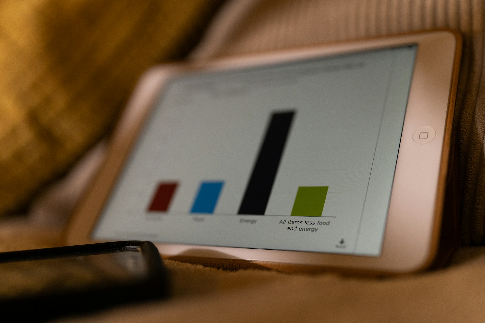
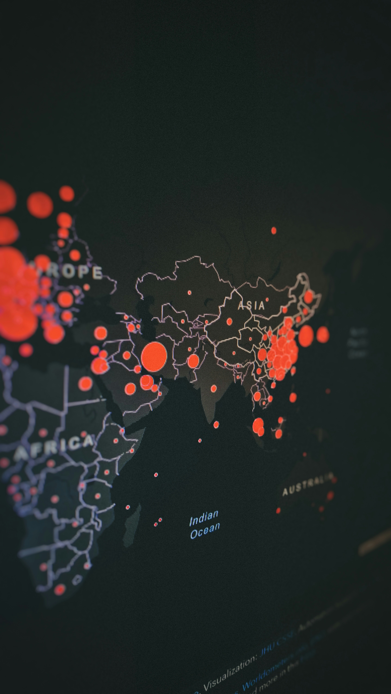
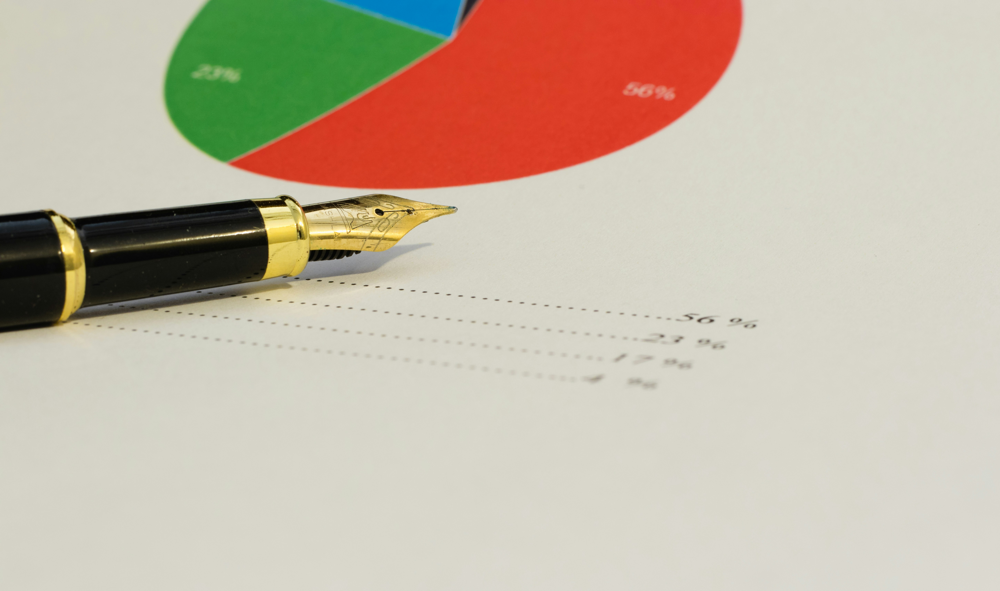

Data‑driven insights for better decisions, stronger systems
CHALLENGE WE'RE ADDRESSING
A data intelligence platform to close information gaps in health, education, and child protection.
Government partners often lack real‑time, disaggregated data to allocate resources effectively. Without visibility into which communities have the highest drop‑out rates, disease burdens, or protection risks, interventions miss the most vulnerable. PULSE aggregates anonymised data from PULSE, FIELDS, and other sources to provide actionable dashboards helping districts target funding, improve policies, and measure impact.
HOW PULSE WORKS
PULSE aggregates anonymised data from vulnerable family interactions, community service referrals, and social worker reports delivering real‑time dashboards for district and national partners.

Snapshot of Scale and Impact
A suite of analytics tools that turns data into action.

Real‑time dashboards
Live views of key indicators: health service uptake, school attendance, child protection cases, food security status disaggregated by district, sub‑county, and facility.
Predictive analytics & risk mapping
Machine learning models forecast disease outbreaks, school dropout risks, and child protection hotspots enabling pre‑emptive resource deployment.

Geospatial & equity analysis
Maps showing which communities are most left behind guiding targeted interventions and budget advocacy.
PULSE is designed to be embedded within government planning and budgeting cycles.
Our dashboards integrate with existing national information systems (DHIS2, EMIS, etc.) to reduce duplication and training costs. District governments already co‑finance 30% of PULSE operating costs, with the Ministry of Health adopting the platform for routine monitoring. We work with local tech partners to keep infrastructure affordable and scalable.

Free For government partners
No licensing fees we provide dashboards at no cost to districts.
Low maintenance costs
Under $0.05 per citizen per year for data hosting and support.
Government co‑financing
30% of running costs covered by district governments target 70% by 2028.
Scalable To New Sectors
Currently used in health, education, and child protection; expanding to agriculture and WASH.
Stories from the Field
How data transformed decision‑making and saved lives.
PULSE in action
When a district noticed a sudden spike in malnutrition cases, PULSE helped them trace the cause and respond immediately.
Data turned insight into action.
Using PULSE’s real‑time dashboard, health officials saw that five villages had reported acute malnutrition within a week. Cross‑referencing with weather data and food price indices revealed a drought‑driven shortage. The district released emergency food relief and activated a supplementary feeding program preventing a full‑blown nutrition crisis
Research and Technical Deep Dives
Exploring how real‑world data can strengthen social protection systems and improve outcomes for vulnerable families.